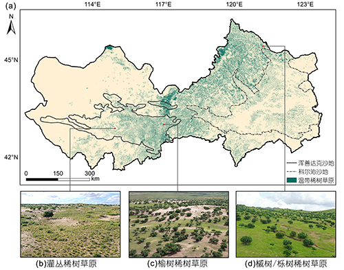

中国东部沙地温带稀树草原数据集 Temperate Savanna Dataset of Eastern China Sandy Lands

该数据集空间分辨率为70m，数据格式为tif。该数据集是根据融合无人机和高分六号卫星两种数据源所发展的温带稀树草原的遥感制图新方法. 利用覆盖主要稀树草原类型总面积1818ha的无人机高分辨率图像构建训练和验证数据集, 集成分类和回归树算法与随机森林算法, 估算了稀树草原上木本和草本植物的覆盖度, 绘制了最小识别面积为0.5ha的中国东部科尔沁和浑善达克沙地温带稀树草原分布图。栅格文件地理坐标系统为WGS1984，属性“1”代表稀树草原分布像元，数据可使用ArcMAP软件打开制图; 并可用Matlab软件进行提取处理。
李晓雅, 王锋, 段涛, 杨凯捷, 杨斌, 王春梅, 田昕, & 卢琦. (2024). 中国东部沙地温带稀树草原的分布与制图. 中国科学: 地球科学, 55(1), 126–140. https://doi.org/10.1360/SSTe-2024-0042
Li, X., Wang, F., Duan, T., Yang, K., Yang, B., Wang, C., Tian, X., & Lu, Q. (2024). Distribution and mapping of temperate savanna in the sandy lands of eastern China. SCIENCE CHINA Earth Sciences, 68(1), 128–141. https://doi.org/10.1007/s11430-024-1449-y
为尊重知识产权、保障数据作者的权益、扩展数据中心的服务、评估数据的应用潜力，请数据使用者在使用数据所产生的研究成果中（包括公开发表的论文、论著、数据产品和未公开发表的研究报告、数据产品等成果），明确注明数据来源和数据作者。对于转载（二次或多次发布）的数据，作者还须注明原始数据来源。